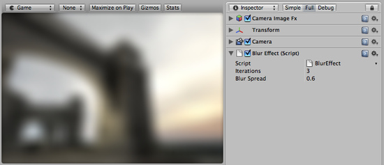

Blur image effect
Blur image effect blurs the rendered image in real-time.
As with the other image effects, Blur is only available in Unity Pro. Make sure to have the Pro Standard Assets installed.

Blur effect applied to the scene
Blur effect applied to the scene
Properties
| Iterations | The amount of blurriness desired. Higher iteration count makes the image more blurry, but each additional iteration has some performance cost. |
| Blur Spread | Higher values will spread out the blur more at the same iteration count, but at some expense in quality. Usually values from 0.6 to 0.7 are a good compromise between quality and speed. |
Hardware support
Blur effect works only on graphics cards with support for pixel shaders. Eg. GeForce FX 5200 or Radeon 8500 and up. All image effects automatically disable themselves when they can not run on an end-users graphics card.